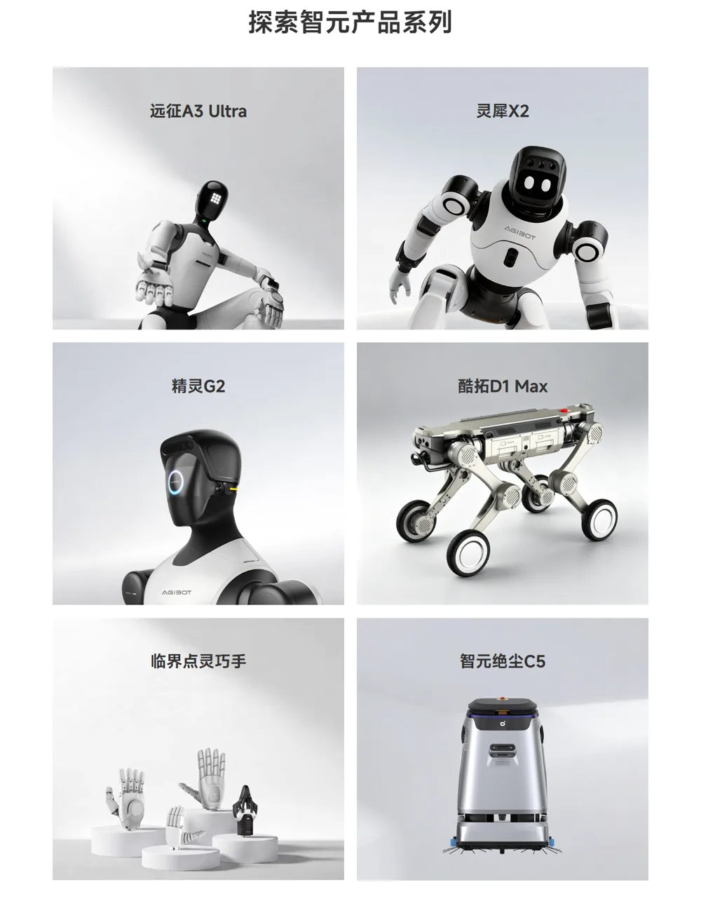
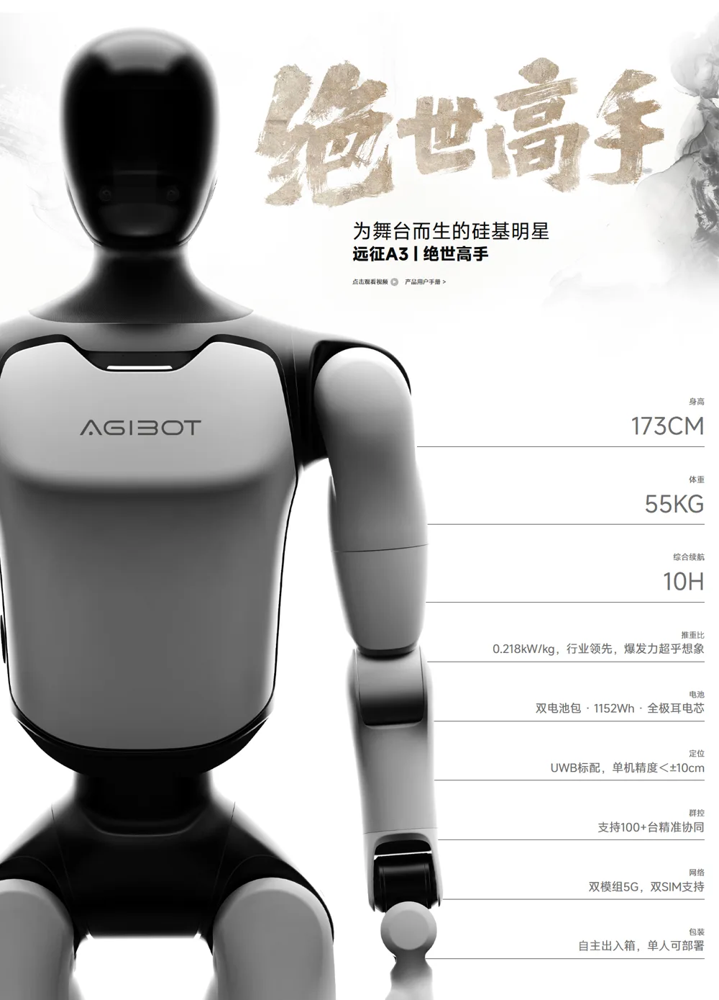

智元机器人智元创新（上海）科技股份有限公司（AgiBot）
成立不到四年、出货量全球第一的具身智能公司：2026 上半年营收近 20 亿元、出货约 9,700 台、份额 43%，产品覆盖人形、轮式、四足、灵巧手、清洁机器人；靠“伙伴生态”和地方国资快速放量，已启动赴港上市，目标估值 400–500 亿港元。
一页结论
- 增长最快：营收从 2023 年 30 万元、2024 年 6,000 万元到 2025 年 10.5 亿元，2026 年接近人士称预期约 45 亿元S1S2
- 平台化打法：同时做本体、灵巧手、数据采集、基座模型（GO 系列）、操作系统（灵渠 OS），并把灵巧手、数采、租赁、四足拆分为独立子公司融资S3S4
- 放量靠“伙伴采购”和国资项目：《财经》调查发现大部分投资方与生态伙伴会采购机器人换取合作机会，单笔最高过亿；主要采购方是政府和国资，与地方国资合资公司再中标项目S2
- 部署从展演走向产线：精灵 G2 在龙旗工厂覆盖平板量产质检工段、进入芯片封测上下料；与长隆合作的具身智能主题乐园已常态化部署近 500 台S3
- 资本运作复杂：2025 年收购 A 股上纬新材 63.62% 股份并承诺 36 个月内不借壳；本体公司计划走港股 18C 章上市S4
01公司介绍
| 项目 | 内容 |
|---|---|
| 公司 | 智元创新（上海）科技股份有限公司，2023-02 成立于上海S2S5 |
| 官网 | agibot.com.cnS6 |
| 创始团队 | 董事长兼 CEO 邓泰华、联合创始人兼总裁兼 CTO 彭志辉（稚晖君），均出自华为S4S5 |
| 融资 | 10 轮融资、投资方超过 50 家（红杉、高瓴、比亚迪、卧龙等），估值超过 200 亿元S2S5 |
| 上市 | 2026-07-24 宣布启动赴港上市，投资人称基石目标估值 400–500 亿港元（截至 2026-11-02 未见挂牌）S2 |
| 基地 | 上海浦东总部、北京、深圳；上海数采中心S6 |

02公司战略
智元要做“平台型企业”而不是单纯的本体公司：用全品类产品、开放生态和资本合作同时铺开。
- 全栈技术：本体（远征、灵犀、精灵、酷拓）+ 执行器（OmniHand）+ 数据（数采中心、MEgo Glove）+ 模型（GO 系列、WITA-OMNI）+ 操作系统（灵渠 OS）S3S6
- 生态开放：AIMA 具身智能生态技术体系；灵渠 OS 1.0 开源并捐赠给开放原子开源基金会S3
- 先工厂后家庭：彭志辉提出物理 AI 要经过五次跃迁：可用的身体 → 垂域部署 → 可泛化基座模型 → 群体进化 → 自我举升S3S4
- 提出度量标准：发布 Worken，作为衡量具身智能部署价值的“度量衡”S3
- 海外：将 30% 收入目标放在海外（媒体报道）S4
03产品定位与产品线
| 产品系列 | 定位 | 代表型号 |
|---|---|---|
| 远征 | 全尺寸双足人形，导览、展演、商业服务S6 | A3 / A3 Ultra（173 cm、55 kg、综合续航 10 小时、支持 100 台以上集群协同）、A2S6 |
| 灵犀 | 小尺寸人形，交互与娱乐S6 | X2、X1S6 |
| 精灵 | 轮式双臂工业具身机器人S5S6 | G2（工业质检、上下料）；G2 Max（单臂 20 kg、峰值 50 kg 重载搬运）S3 |
| 酷拓 | 四足机器人，安防巡检S6 | D1 系列S6 |
| OmniHand | 灵巧手S3 | OmniHand 3 Lite / 3 / 3 Ultra（全域触觉）S3 |
| 绝尘 | 商用清洁机器人S5S6 | C5、C4S6 |

04主要功能与技术路线
模型
运动智能
AGILE 通用运动智能算法框架 + 实时仿真平台 + 数据平台S3
05解决方案与场景
06商业模式
| 模式 | 说明 |
|---|---|
| 整机销售 | 多品类机器人面向企业、政府、科研与消费市场S2S6 |
| 伙伴生态采购 | 投资方与生态伙伴采购机器人换取合作机会或订单（行业普遍现象）S2 |
| 国资合资 | 与地方国资成立合资公司，再中标当地数采、展演项目S2 |
| 子公司拆分 | 灵巧手、数据采集、机器人租赁、四足拆为独立子公司，分别融资S4 |
07上下游供应链与渠道
08主要客户与落地
09营收与财务
| 指标 | 数据 | 口径 |
|---|---|---|
| 营收 | 2025 年 10.5 亿元；2026 年一季度超 10 亿元；上半年近 20 亿元 | 公司口径，未审计S1S2 |
| 全年预期 | 约 45 亿元 | 接近智元人士，非正式指引S1 |
| 盈利 | 仍处亏损，四分之三以上研发投入投向“大小脑”与具身模型 | 媒体报道S4 |
| 估值 | 一级市场超 200 亿元；港股目标 400–500 亿港元（公司曾希望约 800 亿港元） | 《财经》S2 |
关键问题是收入质量：伙伴采购、国资项目、合资公司关联交易各占多大比重，需要等港股招股书的审计数据回答（分析意见）S2S4。
10落地痛点
11近期动态
12潜在风险分析意见
| 风险 | 表现 | 可能程度 |
|---|---|---|
| 收入质量 | 伙伴采购与关联交易占比未知S2S4 | 高 |
| 上市定价 | 亏损状态下的高估值需二级市场认可S2S4 | 中 |
| 资本结构复杂 | A 股上纬新材、港股主体、多个子公司之间的同业竞争与关联交易S4 | 中 |
| 战线过长 | 全品类同时投入，资源分散（分析意见） | 中 |
| 份额被追赶 | 宇树、特斯拉、Figure 产能放量S4 | 中 |
“可能程度”为基于现有公开信息的判断，不是量化预测。
13综合结论分析意见
优势
- 出货与营收规模第一
- 全栈产品与开放生态
- 量产与部署工程能力
劣势
- 仍亏损
- 收入依赖伙伴与国资
- 财务未经审计公开
机会
- 港股上市
- 工业与文旅规模化部署
- 海外市场
威胁
- 价格战
- 监管对关联交易的审视
对 AI 产品团队的启示
- 平台化 = 产品矩阵 + 开发者生态 + 标准：智元同时做硬件、模型、操作系统、创作平台，还提出 Worken 度量标准，争夺行业话语权。
- 早期市场的需求可以“组织”出来：用资本和产业合作换订单是中国具身智能的常见路径，但要警惕把它当成真实需求。
- 部署能力是被低估的竞争力：一个月部署 300 台、标准化 SOP 和运维闭环，比单台性能更决定规模化。
- 看出货量先看口径：是否含轮式、是否含小尺寸，会让排名完全不同。
信息缺口
以下信息未找到可靠的公开来源，本报告不做推测。
- 经审计的收入、毛利与亏损
- 伙伴采购与国资项目在收入中的占比
- 港股递表时间与募资规模
- 主要供应商名单
- 海外收入占比
来源
A 官方 · B 权威媒体或第三方 · C 社区（仅用于口碑与线索）。访问日期均为 2026-11-02。
- S1 · B超越宇树科技和优必选！智元机器人上半年营收近20亿元快科技（新浪科技） · 2026-10-29
- S2 · B智元机器人启动港股上市，投资人称目标估值400亿至500亿港元《财经》杂志（新浪财经） · 2026-07-25
- S3 · B2026智元创新日，技术跃迁推动部署态全域落地光锥智能（DAMO 开发者矩阵） · 2026-10-29
- S4 · C智元机器人冲刺IPO：三年营收飙至40亿，400亿港元估值能站稳吗？人形大讲堂（网易号） · 2026-07-29
- S5 · CAgiBotWikipedia · 2026-11-02 访问
- S6 · A智元官网（产品、解决方案、远征 A3）智元机器人 · 2026-11-02 访问